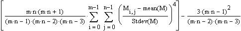
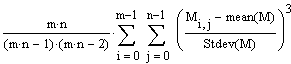

kurt(A, B, C, ...) Returns the kurtosis of the elements
A, B, C, ..., defined as

where M is an array created from the function arguments
A, B, C, ...
skew(A, B, C, ...) Returns the skewness of the elements
A, B, C, ..., defined as

Arguments:
- A, B, C, ... are arrays or scalars. There must be at
least four elements in the arguments for kurt, and at least 3 for skew.
- The standard deviation of M, an array created from the
function arguments, must not equal zero.
Notes:
- The kurtosis of a set of values indicates how flat or peaked the distribution
is when compared to the normal distribution.
kurt(M) > 0 indicates a relatively peaked distribution.
kurt(M) < 0 indicates a relatively flat distribution.
- The skewness of a set of values measures the asymmetry about the mean.
skew(M) = 0 indicates a distribution is symmetric
about its mean. skew(M) > 0 indicates
that most of the distribution is located near the origin and the "tail"
extends towards positive values. skew(M)
< 0 indicates that the "tail" extends towards more negative values.
- skew(M) = 0 and kurt(M)
= 0 for the normal distribution.
- You may wish to see Mathcad's other functions for data analysis.